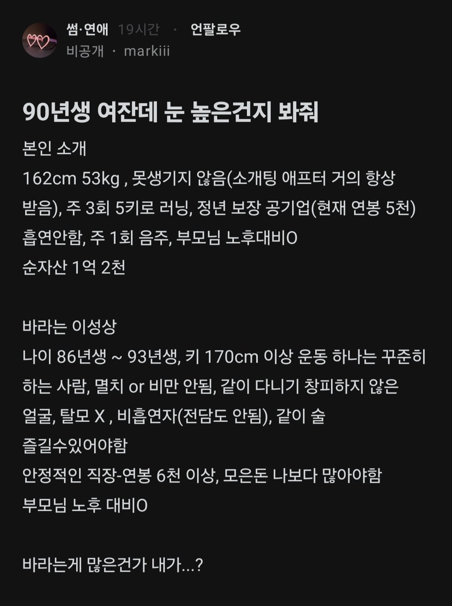
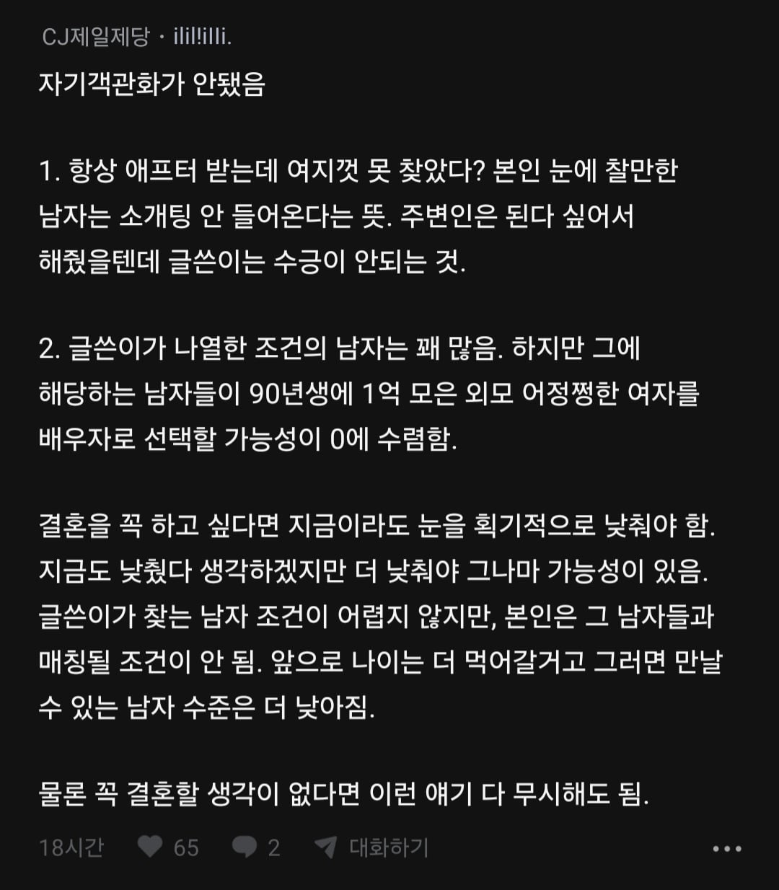
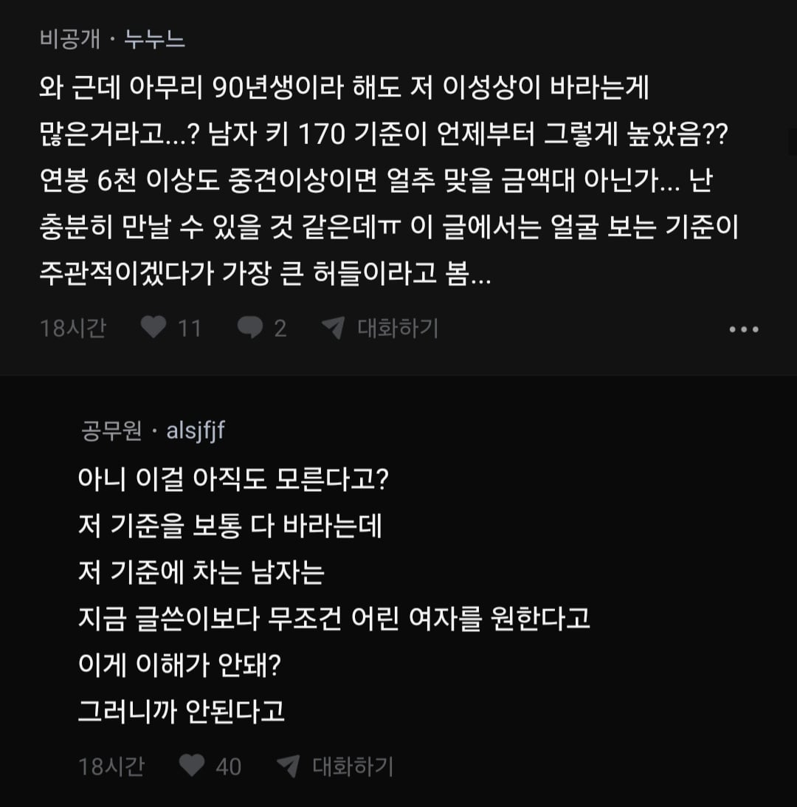
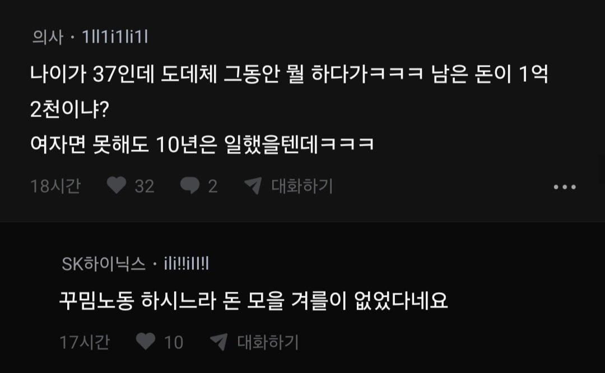
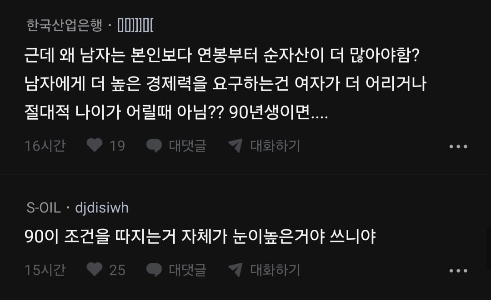

눈이 높진 않은데 그렇다고 아주 낮진 않고..
개인적인 생각인데 30후부터 결혼 못한 애들은 어디 문제있는거임.. 성격이라던가 외모라던가 순수하게 무슨 문제가 있으니 안만나지는거임
오 쒸발...저 여자 조건이 그렇게 높진 않다 생각했는데, GPT랑 클로드 유료모델로 86~93 미혼남자중 저조건을 몇%나 만족하냐고 물어보니
gpt는 1%대, 클로드는 0.7~1.5% 라고 답함 ㅋㅋㅋㅋ
(소득-자산 등 서로 관련성있는 요소들도 고려해서 계산함)
물론 저게 상위1%란 말은 아니지만, 저조건을 전부 요구하면 절대 시집못갈듯 ㅋㅋ
1. 글쓴이 나이가 37임
2. 각 조건을 20대 30초 남자기준으로 보면 허들이 높지 않음
하지만 글쓴이 나이를 고려하면 37이상 30후 40대 남자중에 저런 사람은 잘 없음
3. 결국 눈 높은거 맞음 애초에 이제 글쓴이는 생물학적 여자로서의 역할이 음... 2세 포기하고 그냥 평생 보호자 동반자 친구 생각하고 결혼하려는 남자여야함
정확히는 30중후반 중에는 연봉도 더 나은 남자들도 많지. 저런 사람이 잘 없다기 보단 다른 사람들 말대로 저 스펙의 남자들이 20후 30초 여성들을 보지, 30후반 여성을 보지 않는다가 더 적절..
30후 40초에 뚜껑 관리하고 배 안나온 사람 드뭄 연봉은 뭐 경력이 있으니까 높을 수 있지 여튼 저 조건이 20대나 30초엔 낮은 조건이지만 30후 40초 가면 외적 조건이 빡센편
그리고 너말도 맞고 내가3번에 써놨듯이 저 조건 해당하는 남자는 저 나이먹은 여자를 여자로 안보고 20후는 무리일지라도 30초는 충분히 만날 수 있다고 생각하고 30초 만나지
결국 이러나저러나 주제파악 못하고 눈 높다는게 팩트지
진짜 솔직하게 37 여자는 상한 음식과 같기 때문에 똑같이 상한 남자 먹기 싫으면 결혼 포기하는게 낫다고 봄
여성은 기본 보짓값이 있으니까 ㅋㅋ
근데 90년생에 엄마가 아니니까 여성이 아닌데 ㅋㅋㅋ
예전에는 25넘어가면 안된다 크리스마스 케익이다 이랬지만
요즘엔 35넘어가면 진짜 어렵다..
무난무난한 조건의 남자나 여자가 저 나이까지 결혼 안한거면 조건 말고도 다른 문제가 있는거임 그걸 맞추기 쉽지 않음
90은 연예인급 아니면 좀…
나이 37쳐먹고 1억 모은여자 만날바에 한푼도 안모은 20대만나는게 나을듯;;
나름 무난한 조건이 맞음. 하지만 저 무난한 조건이 저 여자가 선택할 수 있는 상한선임
90까지 시집안가고 뭐햇냐 주변사람들이 존나 나쁜거지 언니정도가 뭐가 아쉽다고 이지랄 까대서
ㄹㅇ ㅋㅋ 우리언니가 제일 불쌍해 ㅇㅈㄹ 거의 포르노
내나이에 37아줌마 만나느니 한푼없는 20대 만나지
남자 안정적인 직장 + 연봉 6천이 무난한 조건일 수가 있나? 공기업이나 공공기관 재직자가 전체 재직자중에 1프로정도일텐데..
근데 90이면 뭐.. 그러거나 말거나임ㅋㅋㅋㅋㅋ
능력이야 나이따라 갖춰진 것 같은데
진짜 이쁜거면 저정도 능력에 결혼 못할것도 없긴함.
저정도면 내려놨다고 생각하지만 막상 저정도 되는 사람 나타나면 온갖 트집 잡아서 또 뺀찌 놓을듯